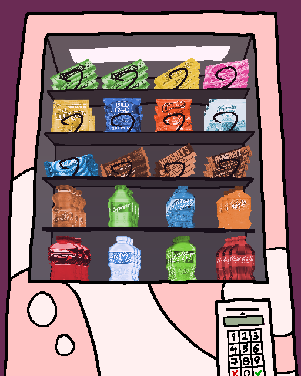

Unlike these snacks, AMIIBOS are neither tasty nor nutritious.
They're not nutritious.
GONDOLA takes another look at the VENDING MACHINE. Lining the top row are various types of GUM, followed by SNACK BAGS on the second row, CANDY BARS on the third row, and assorted SOFT DRINKS below. At the bottom right of the machine is a KEYPAD, equipped with a CASH SLOT and a LIQUID CRYSTAL DISPLAY SCREEN.